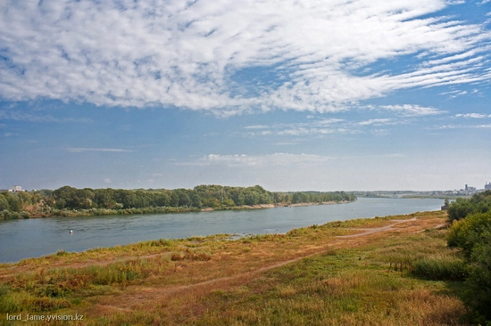
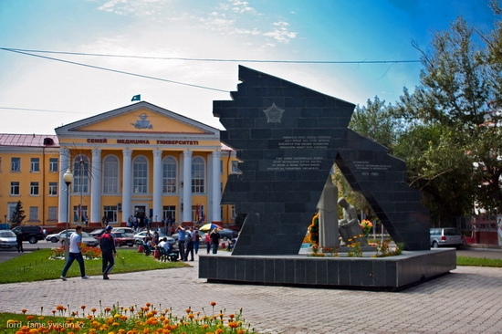
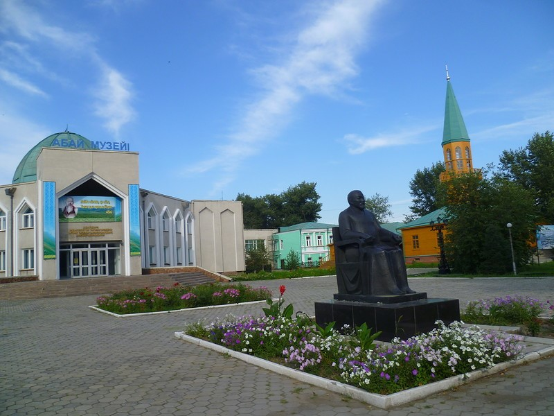

Irtysh is a river in Russia, China, and Kazakhstan. It is the chief tributary of the Ob and is also the second longest tributary river in the world after Paraná River.

Semey medical university is one of the largest medical universities in Kazakhstan with its own hospital and branches in Pavlodar and Ust Kamenogorsk.

Abay museum is a place and a symbol of the spirituality of the Kazakh people.
